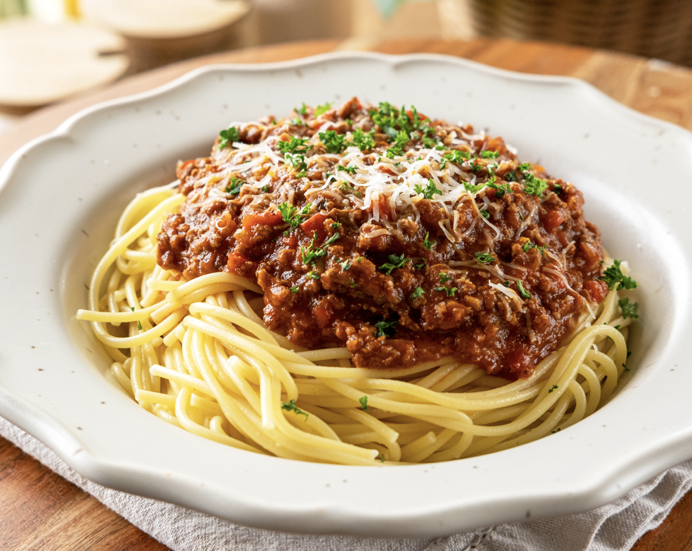

Home
Meat Sauce

The Dish
This dish is easy to make and will make you a beast.
High in protein and with some health benefits from the tomato sauce (probably).
Great for saving underseasoned or overcooked ground beef.
Ingredients
- 1 lb ground beef
- 24 oz marinara sauce
- (OPTIONAL) 1 sprinkling of seasoning (YOUR CHOICE)
Directions
- Gather ingredients.
- Heat a large skillet over medium heat. Cook beef in the hot skillet until crumbly and no longer pink. Remove from the heat and set aside.
- Open marinara sauce and pour into a sufficiently large container
- Add cooked beef to sauce container and mix thoroughly.
- Serve with pasta, rice, burger buns, or alone!